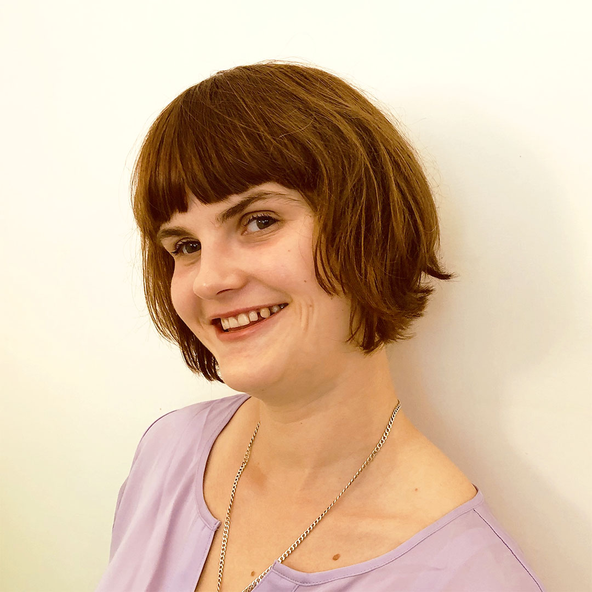

Schau dich einmal um. Wie viele der Dinge, die du in deinem alltäglichen Leben benutzt, könntest du blind erfassen? Könntest du dein Handy bedienen? Ein Straßenschild erkennen? Einen Flyer lesen? Tagtäglich werden wir mit Bildern bombardiert, die unsere Aufmerksamkeit einfordern. Seien es Smartphones, Computerbildschirme, Fernseher, Straßenschilder, oder Werbetafeln, unsere Augen werden ununterbrochen mit einer Bilderflut überfüllt. Dabei vergessen wir oft, dass es auch noch andere Sinne gibt, mit denen wir die Welt erleben. In meinem Workshop zum Thema „Blindenselbsterfahrung“ zeige ich dir, wie man „mit den Ohren sehen“, durch Ertasten einen Raum erfahren und sich anhand des Geruchs orientieren kann. Durch Übungen und Spiele mit Augenbinden erfährst du, welche Hindernisse und welches Potenzial sich in der Dunkelheit tatsächlich verbirgt.
Wenn du bereit bist, deine Augen für ein paar Stunden zu verschließen und die Welt als Blinder zu erleben, wenn du der eigenen Kreativität durch neue Sinneseindrücke auf die Sprünge helfen willst oder wenn du wissen willst, welche Herausforderungen blinden Menschen im Alltag begegnen, dann hör einfach mal vorbei!
Nächste Termine
2020 wird monatlich ein Workshop zur Blindenselbsterfahrung angeboten. Der nächste Termin wird Anfang Januar bekanntgegeben. Um auf dem Laufenden zu bleiben, melde dich gerne für den Newsletter an.
Inhalt des Workshops
Folgende Programmpunkte sind Teil des Workshops „Mit Ohren sehen“. Während der Übungen tragen die TeilnehmerInnen alle oder teilweise Augenbinden.
Geschicklichkeitsspiele im Dunkeln
Teambuildingspiele
Spaziergang im Freien
Aktivierung der Ohren durch Hörbeispiele
Aktivierung der Nase durch Geruchserkennung
Aktivierung der Finger durch tastbare Gegenstände
Übung zur Raumentstehung durch Musikinstrumente
Preis und Teilnehmerbegrenzung
Der Workshop ist auf eine Teilnehmerzahl von 10 Personen begrenzt und erfordert eine Mindestanzahl von 4 Personen. Die Teilnahme kostet 30,00 € pro Person.
Kontakt
Du hast noch Fragen oder würdest dich gerne für den nächsten Workshop anmelden? Schreib mir gerne eine Nachricht. Ich antworte so schnell wie möglich.
E-Mail: laviniaknop@gmail.com
Newsletter
Wenn du gerne Infos zu den nächsten Workshopterminen erhalten oder mehr zum Thema Selbsterfahrung, Sinnesaktivierung und Blindheit erfahren möchtest, vergiss nicht, dich für den Newsletter anzumelden.
E-Mail: laviniaknop@gmail.com
Über Lavinia
Lavinia Knop-Walling ist eine freiberufliche Autorin und Bloggerin rundum die Themen Inklusion, Blindheit und das Potenzial der Dunkelheit. Zurzeit leitet sie Workshops zum Thema Blindenselbsterfahrung, schreibt Bücher und arbeitet als Kampagnenmacherin für das Projekt Berliner Spielplan Audiodeskription. Mehr zu Lavinias Lebenslauf findet ihr unter LinkedIn.